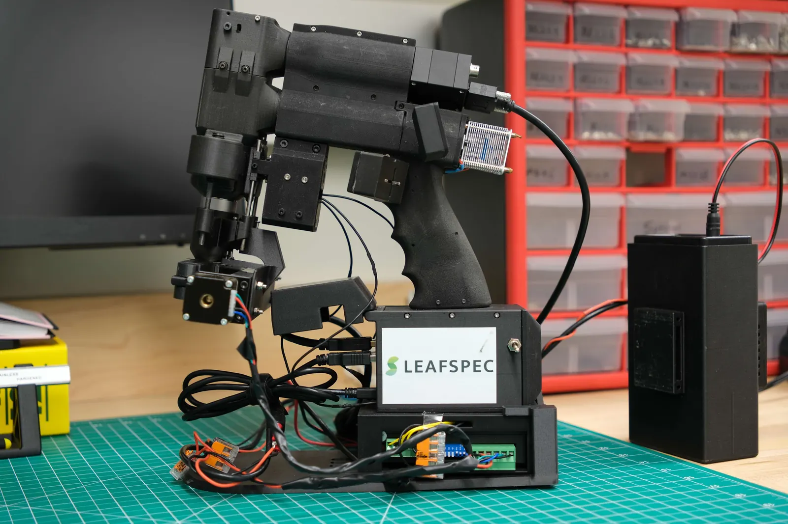
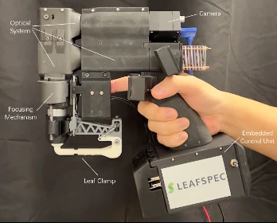
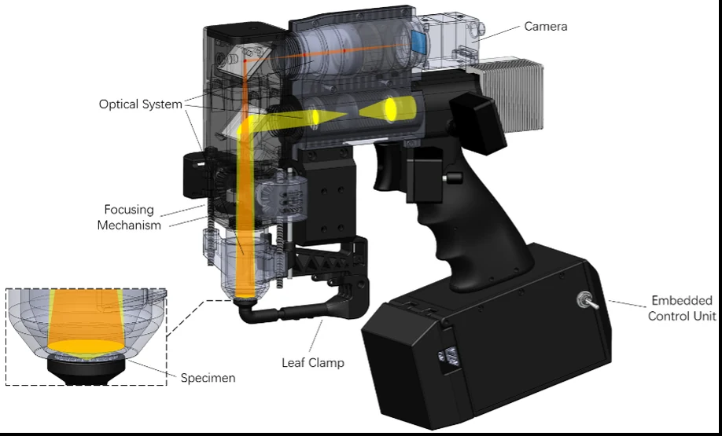
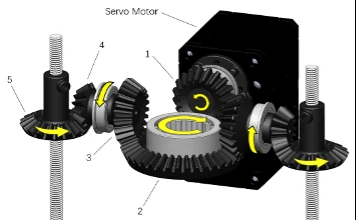
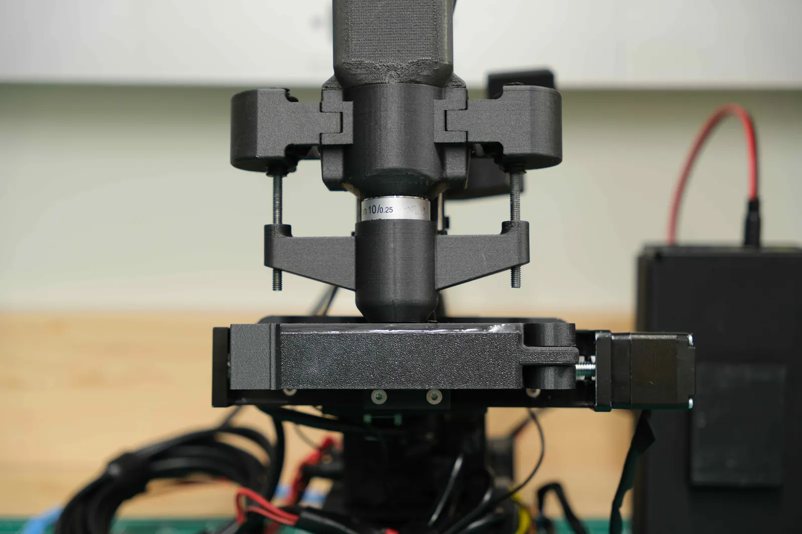
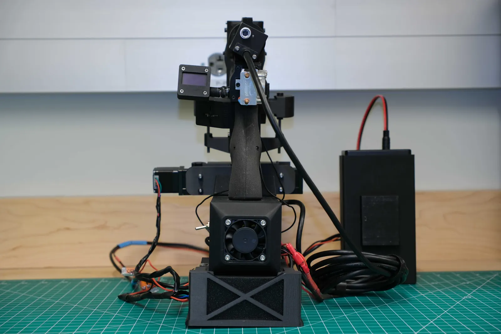
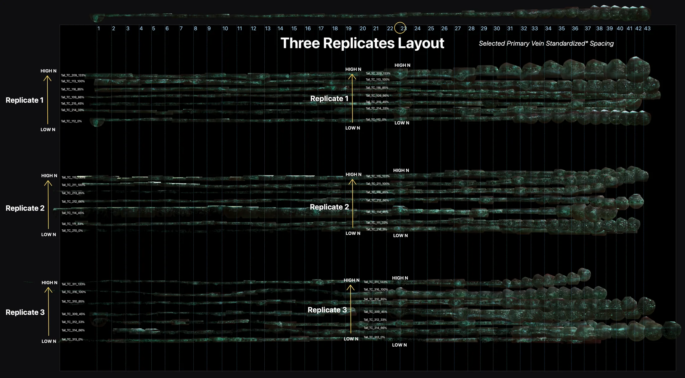
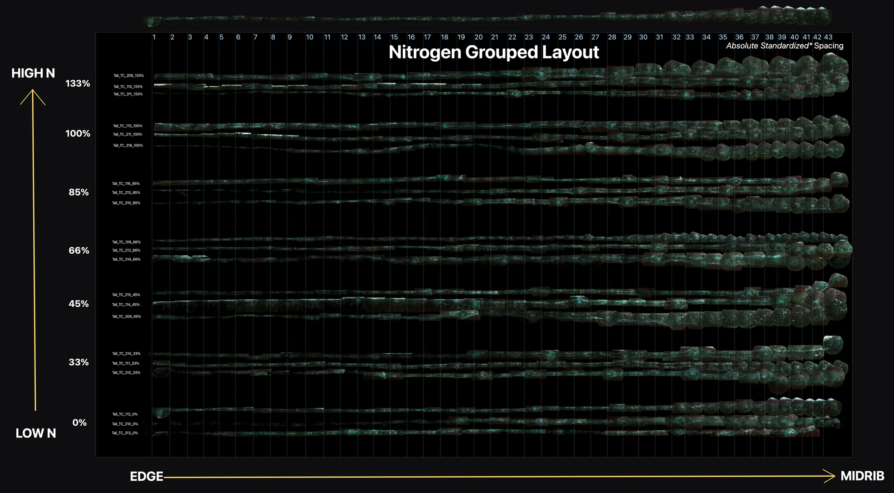
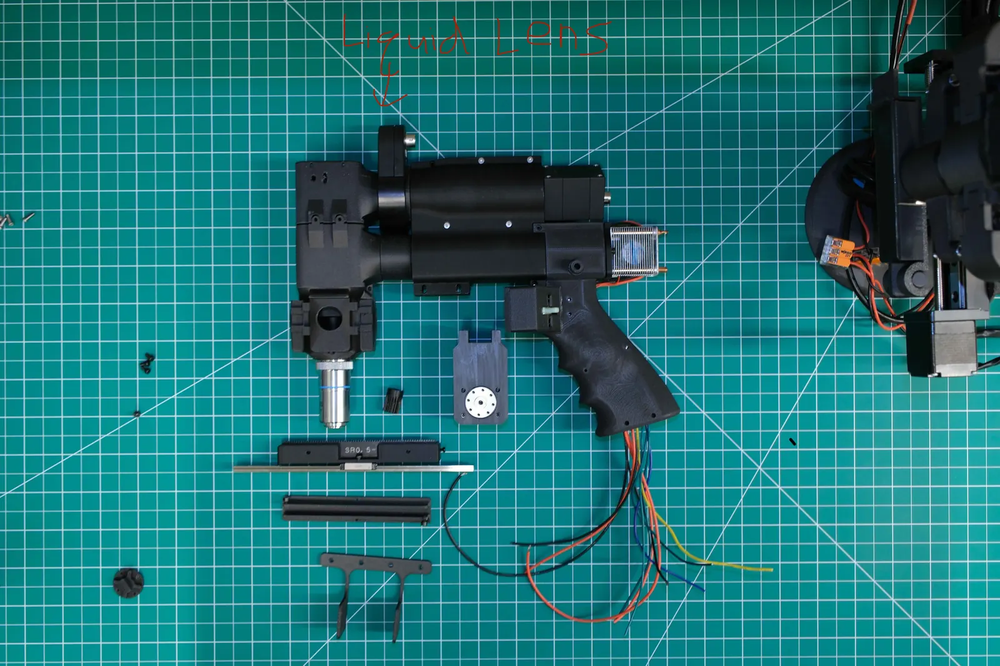

Project 01 In progress
Leaf Cross-Section Microscope Imager
M.S. project, Purdue ABE Plant Sensor Lab · Jan 2026 to present
A modular attachment for the lab's handheld 400× leaf microscope that images a full corn-leaf cross section, so nitrogen status can be read from the leaf's internal structure.

One corn leaf, edge → midrib · ~40 frames stitched · captured by prototype 1
Problem
- The microscope sees one spot at a time, and its autofocus hunts for peak sharpness by stepping the leaf platform down a threaded-rod stage, taking about a minute per frame.
- Play in the platform's guide rods tilts each shot slightly. That is negligible on a leaf surface, but enough to push a thin cross section out of the frame entirely.
- Autofocus scores sharpness at the center of the view, and a cut corn leaf is rarely centered, so it often locks onto the empty stage instead of the leaf.
Prototype 1 · built
- A 3D-printed clamp on a motorized linear rail carries the cut leaf sideways under the objective in 0.75 mm steps, cross section facing the lens.
- A web control console (Leafspec‑DCM) adds live camera preview and real-time motor control, replacing a terminal-only workflow.
- 21 corn-leaf cross sections captured edge to midrib, each stitched from around 40 frames in a companion desktop app.
- The catch: focusing each frame by hand took roughly 20 seconds, so one leaf took over 13 minutes.
Prototype 2 · in progress
- An electrically tunable liquid lens, already fitted into the optical path, focuses with no moving parts, so the platform tilt no longer matters.
- The motor freed from the focusing gears now drives a weight-balanced rack-and-pinion stage, replacing the off-center linear actuator whose overhung weight tilted the stage and let in stray light.
- Target: a full cross-section scan in under 1 minute per leaf, down from 13.
Drag the slider to pan both leaves at once, the way the rail walks them under the lens







